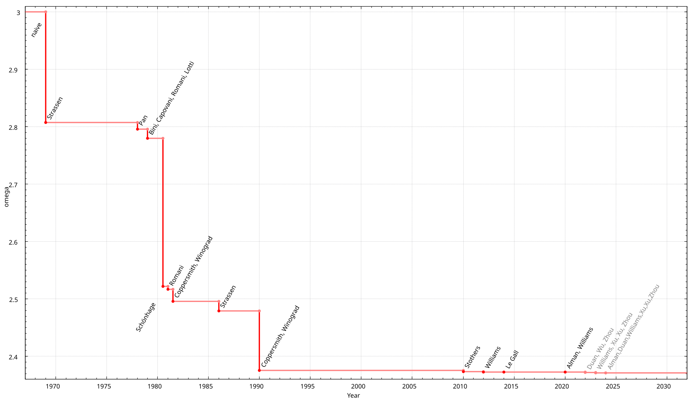

Optional: Faster Matrix Multiplication#
The row method of matrix multiplication is the standard approach used for calculating matrix products by hand. However, it is expensive: to multiply two dense \(n\times n\) matrices requires \(n^2\) dot products be calculated, one for each of the \(n^2\) entries in the result. Each dot product involves \(n\) multiplications and \(n-1\) additions, or \(2n-1\) operations taken together. All told, then, multiplying two \(n\times n\) matrices requires \(n^2(2n-1) = 2n^3 - n^2\) operations, or more succinctly, is \(\mathcal{O}(n^3)\).
It is worth noting that matrix multiplication is an embarassingly parallel problem; that is, every dot product that needs to be calculated can be calculated independently of the others, so the computation lends itself naturally to massive parallelization. This does require many threads (\(n^2\), to be precise) and is the reason that NVIDIA’s stock has gone up more than 30,000% over the past ten years: NVIDIA’s H100 GPUs (state-of-the-art at the time of this writing) can execute over 250,000 concurrent threads, making them invaluable for speeding up the massive matrix multiplies required to train and perform inference with large language models and other state-of-the-art machine learning/AI models.
No matter how much compute is available, better algorithms are crucuial for getting the most out of one’s hardware. There are many classic problems in computer science that illustrate the impact that a good algorithm can have; consider for instance the maximum subarray problem.
Example: Given the values \(-3, 2, 5, -4, 7, 2, -3, -6, 8\) and using 0-based indexing, \(i=1\) and \(j=5\) produce the sum \(2 + 5 -4 + 7 + 2 = 12\), which is maximal. A naive exhaustive approach to this problem is \(\mathcal{O}(n^3)\), but a good algorithm (Kadane’s algorithm) runs in \(\mathcal{O}(n)\), making the latter approach very quick even in situations where the naive algorithm is simply unrunnable.
Although matrix multiplication was first described in 1812, it wasn’t until 1969 that Volker Strassen showed that it could be done in less than \(\mathcal{O}(n^3)\) time, using an algorithm now named after him. Strassen’s algorithm runs in \(\mathcal{O}(n^{\log_27}) \approx \mathcal{O}(n^{2.8074})\). While this might seems a small improvement it is significant for large enough \(n\), and Strassen’s algorithm is currently implemented in widely-used linear algebra libraries such as LAPACK and BLAS.
Faster algorithm’s than Strassen’s exist, but they are generally not as numerically stable. This is a very active area of research. In January 2024, a new algorithm brought the complexity down to \(\mathcal{O}(n^{2.371552})\). It is theorized that the lower bound on the time needed to perform matrix multiplication is \(n^{2 + \mathcal{O}(1)}\), which would be remarkable if true, but this has not been proven and it is a major open question in theoretical computer science. The image below (By Jochen Burghardt - Own work, CC BY-SA 4.0) shows the improvements in runtime made by various algorithms over the years along with a forecast of future gains.

Strassen’s Algorithm#
Strassens’s algorithm is not at all intuitive. It is important to note at the outset that multiplication is generally a slower operation for a modern processor to perform than addition (generally 3-6 times slower; for this reason many compilers will replace \(2x\) with \(x + x\)). Strassen noticed that when multiplying \(2\times2\) matrices it is possible to reduct the number of multiplications required from 8 using the standard approach to 7. This is done as follows: Let
and define the following constants:
\(m_1 = (a + d)\times(e + h)\)
\(m_2 = (c + d)\times e\)
\(m_3 = a\times(f-h)\)
\(m_4 = d\times(g - e)\)
\(m_5 = (a + b)\times h\)
\(m_6 = (c - a)\times(e + f)\)
\(m_7 = (b - d)\times(g + h)\)
Then
Example:
Let
Then
\(m_1 = (1 + 3)\times(0 + 7) = 28\)
\(m_2 = (-1 + 3)\times0 = 0\)
\(m_3 = 1\times(4 - 7)=-3\)
\(m_4 = 3\times(-5 - 0) = -15\)
\(m_5 = (1 + 2)\times7 = 21\)
\(m_6 = (-1 - 1)\times(0 + 4) = -8\)
\(m_7 = (2 - 3)\times(-5 + 7) = -2\)
and
which you can verify with the conventional calculation.
To extend this to matrices with \(n>2\), we need to introduce block matrices. This is simply a conceptualization of a matrix as a collection of compatible submatrices; for example, I could write a \(4\times4\) matrix \(A\) using \(2\times2\) blocks:
Here each \(A_{ij}\) is a \(2\times2\) matrix; in particular,
the components in the ‘upper left corner’ and ‘lower right corner’ of \(A\) itself. Now, it is important to know that multiplication with compatible block matrices is the same as multiplication with ordinary matrices; for example,
using the standard row method.
So, to extend Strassen’s algorithm to matrices with \(n>2\), we use recursion with block matrices:
Divide each \(n\times n\) matrix into four \((n/2)\times(n/2)\) blocks as above
Apply the above 7-multiplication formula recursively
Combine the results using additions/subtractions
A complete analysis of the runtime complexity of Strassen’s algorithm is beyond the scope of this course (for now, I may add it later if there is interest). As you no doubt notices, there is a significant increase in additions for a very slight reduction in multiplications (there are also additional space considerations that we are not considering here). For small matrices, this impacts the efficiency of the algorithm, and in practice Strassen’s algorithm isn’t usually used until \(n\) is around 1000, where it begins to outperform other methods.